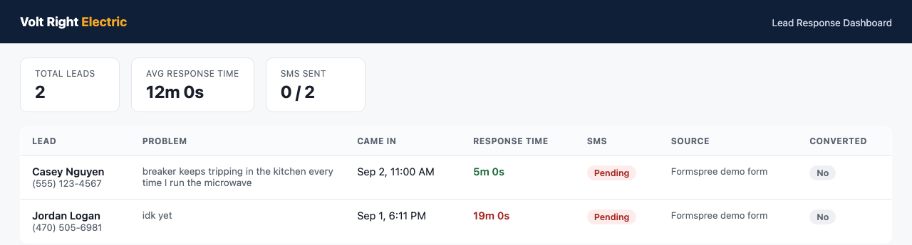

Automated instant response the moment someone fills out your form. No more losing jobs to slow callbacks.

Live dashboard from a working deployment — real response times, tracked automatically.
Three steps, no manual follow-up required.
Someone fills out a contact form describing their problem.
Within seconds, they get a text and email referencing their specific issue, letting them know help is on the way.
No cold leads, no lost jobs to slower competitors.
Leads contacted within 5 minutes convert dramatically better than leads contacted after 30. Every second between form submission and first response is a second a competitor can steal that customer. This system closes that gap to seconds, not minutes.